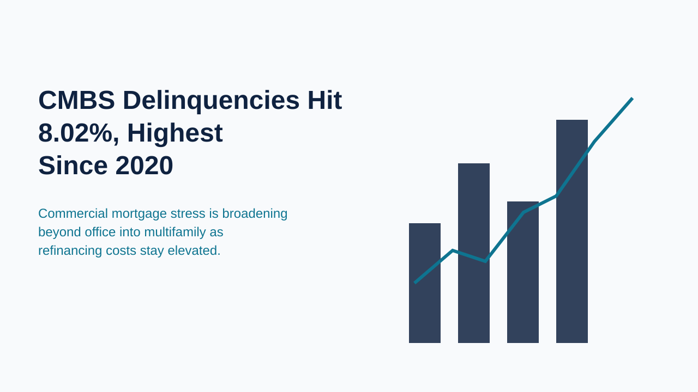
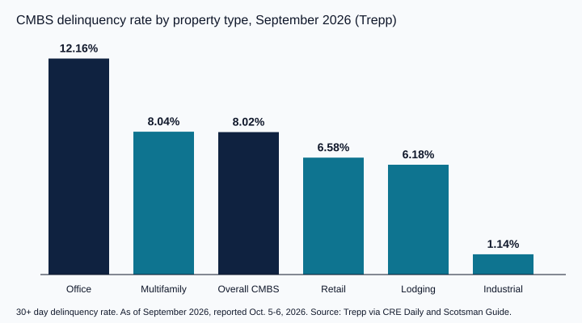

CMBS Delinquencies Reach 8.02%, the Highest Since 2020, as Office Hits 12.16% and Multifamily 8.04%

The commercial mortgage-backed securities market closed September with its weakest credit reading in roughly six years. Trepp reported on October 5, 2026 that the overall CMBS delinquency rate reached 8.02% for September, up 17 basis points from 7.85% in August and described by coverage of the report as the highest level since 2020. For investors and lenders who price residential investment property, DSCR loans and bridge debt, the commercial credit cycle is a useful read on how lenders are treating debt service coverage right now.
Office remains the weakest sector. Its delinquency rate stood at 12.16% in September, up 16 basis points on the month. The more notable shift is multifamily, which Trepp put at 8.04%, compared with 6.59% a year earlier. That is a rise of roughly 1.45 percentage points in twelve months, and it places apartment loans slightly above the overall index. Lodging was 6.18%, retail 6.58%, and industrial just 1.14%, flat on the month.
A second measure points the same way, though at a different level. KBRA reported on September 30, 2026 that its CMBS delinquency rate was 7.7%, or $25.8 billion, up 9 basis points from 7.6% in August, and noted that increases in office and multifamily were partly offset by declines elsewhere. The two series use different methodologies, so their levels should not be compared directly, but both show deterioration concentrated in office and apartments.
Refinancing pressure explains part of the pattern. Trepp, as cited by CRE Daily in August, tracked roughly $65 billion of CMBS loans maturing by the end of 2026, with $37 billion having no extension options remaining, and found that more than half of maturing properties would need new equity to refinance. Meanwhile the Freddie Mac 30-year fixed mortgage rate averaged 7.40% in the week of October 15, 2026, against 6.27% a year earlier, a residential benchmark that nonetheless signals the broader rate environment lenders are working in.

For private and DSCR investors, the practical implication is about underwriting discipline rather than direct exposure. CMBS stress does not set the terms of a single-family rental or small multifamily loan, but it shapes how aggressively lenders and capital providers treat coverage ratios, reserves and leverage on income property. Where multifamily credit is weakening in the commercial space, investors should expect closer scrutiny of rent assumptions, expense loads and the gap between purchase price and supportable debt.
The September readings do not predict a collapse in residential investment lending, and delinquency rates in different sectors are driven by different problems. They do reinforce a simple point for the weeks ahead: with credit stress rising in commercial real estate and borrowing costs high, a well-documented, conservatively underwritten deal has a clear advantage over one that depends on optimistic assumptions.